The terrestrial seed era
The first product catalog: Galactic Gourmet, Cosmic Crunchies, and Nebula Nibbles, alongside the earliest engineering programs, including the zero-gravity litter box.
United Cat Foods / Corporate Overview
United Cat Foods is the merchant carrier of the charted lanes: an interstellar freight company spanning food, water, energy, and software, headquartered at Viroqua Prime and operated by hyper-intelligent cats in partnership with humans, thinking machines, and a growing network of freelance charter haulers.
The Mark
"Cats make space comfortable." The corporate motto is also the business plan. Deep space is cold, procedural, and far from home. Our work makes it survivable in the ways instruments do not measure: warmth, routine, and the sound of a purr against the hum of a habitat.
To nourish the galaxy's feline companions with the finest, most delicious, and nutritious cat foods, ensuring their well-being across the stars. U.C.F. charter statement
The Story
The first product catalog: Galactic Gourmet, Cosmic Crunchies, and Nebula Nibbles, alongside the earliest engineering programs, including the zero-gravity litter box.
The Olfactory Research Laboratory opens at Utopia Planitia, the first lab led and staffed entirely by feline scientists. The compact fusion program launches. The three-species workforce doctrine is formalized: humans, intelligent cats, and thinking machines.
A state-of-the-art fleet, the Intergalactic Flavor Infuser, partnerships with Martian feline communities, solar-powered lunar production, and Catbot Assistants across the network. The empire, operating quietly and on schedule.
A Facility of United Cat Foods
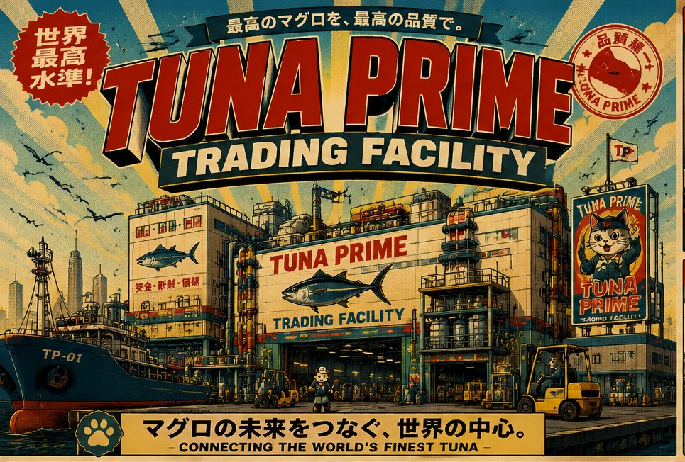
Every can begins at a gate like this one. The trawler ties up, the forklifts wake, and somewhere above the door a sign promises the one thing United Cat Foods has never renegotiated: the finest tuna, at the finest quality, moving. What started as a dockside auction shed is now the reference market for protein in this arm, and the poster on the fence has not needed updating, because the promise has not changed.
The pictures below were cut from the facility's own orientation board. Each panel is a department, and each department is a story that begins the moment the fish crosses the threshold.
In the auction hall, lot number 105B, a hon-maguro of 305 kilograms, went to the floor at twenty-five million, six hundred eighty thousand. The bidding cats wore hard hats. Nobody remembers why that became the rule; everybody remembers the day it became necessary.
Inspection follows the hammer. Four inspectors, four checkmarks: freshness, quality, weight, safety. The magnifying glass is ceremonial. The standards are not.
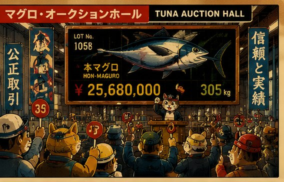
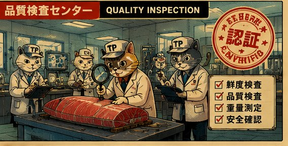
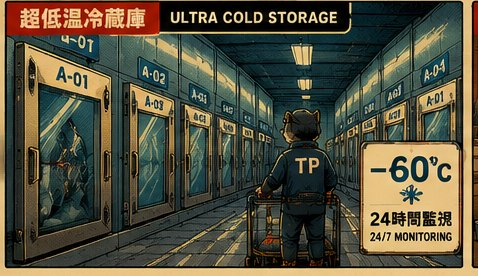
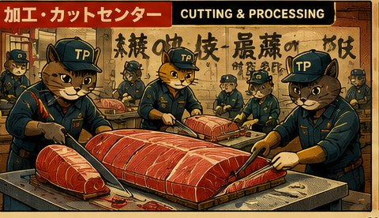
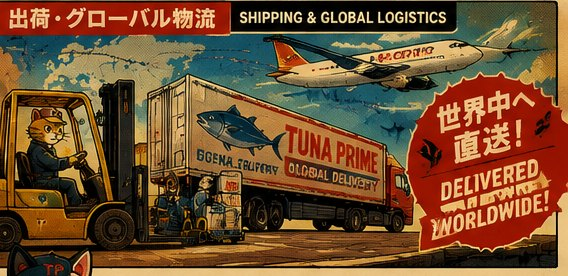
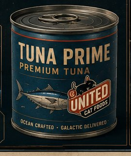
The Same Promise, Higher Up
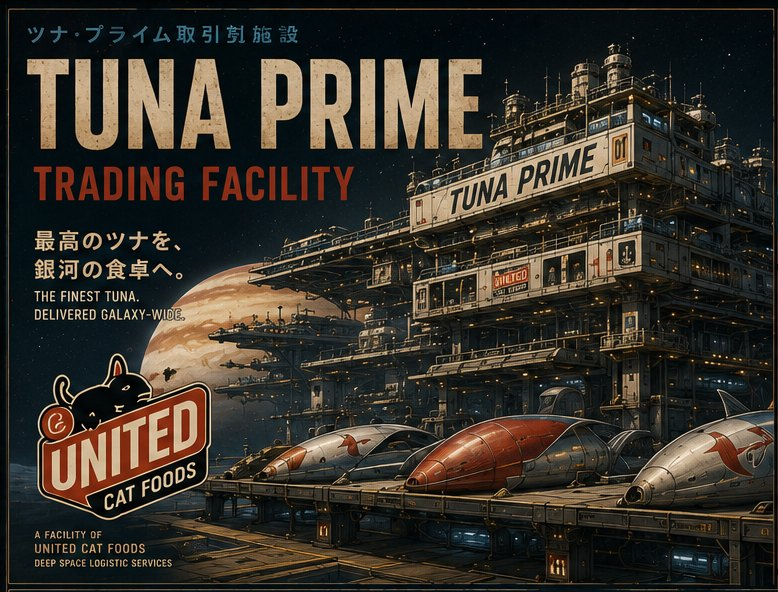
When the market went to orbit, the facility went with it. Tuna Prime 01 keeps the old departments and adds three hundred kilometers of altitude: trading dock, quality lab, cold storage, processing plant, control center, shipping hub, stacked into one structure that catches Jupiter's light on the morning side.
The vaults run at −60°C and 95 percent humidity, and a lot keeps its grade for one hundred twenty days, which is longer than most arguments about it. Trade routes run to Neko Station, Luna Depot, Titan Relay, the Jupiter Hub, and the outer rim markets, and every route is drawn on the wall so nobody has to ask twice.
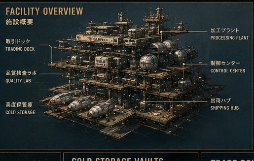
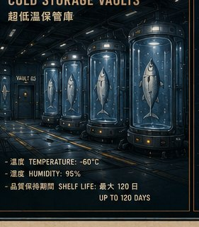
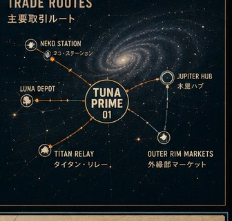
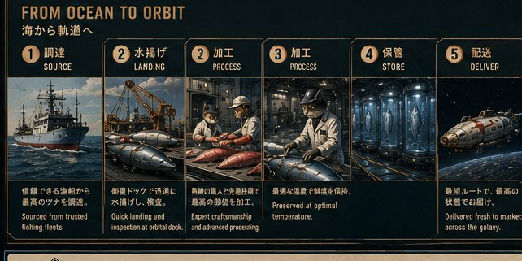
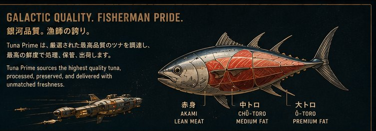
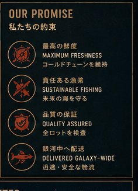
Leadership
Chief Engineer. Led the fleet-wide installation of Zero-Gravity Flavor Dispersion. Believes every problem is a knot: patience first, then claws.
Logistics Director. Oversees interstellar shipping. Sees everything from a high place, as the title suggests.
R&D Mastermind. Co-perfected Time-Release Crunchies through a rigorous program of personal testing.
R&D Mastermind. Co-perfected Time-Release Crunchies. Handles the 42-second interval personally.
Campaign Face. Star of "Bite of the Future" on the Orion Broadcast Network, leaping through a holographic tuna waterfall.
Partners & Ambassadors
The network runs on long relationships. Our key ambassador, Spacetrucker, has delivered U.C.F. products across the galaxy since the seed era and remains the public face of the fleet — and the model for every freelance captain in the Charter Hauler Program.
Locations
| Location | Significance |
|---|---|
| Viroqua Prime | Corporate headquarters and dateline of major press cycles. |
| Utopia Planitia | Olfactory Research Laboratory, staffed entirely by feline scientists. |
| Mare Tranquillitatis | Lunar aquafarms supplying moon-harvested salmon. |
| Alpha Centauri | Botanical cultivation: Nebula Nettle, Orbiting Oregano, Centaurian Silvermint. |
| L5 habitat gardens | Zero-gravity catnip blooms grown year-round for renewable enrichment. |
| Mars | Home of partner feline communities. |
| The rings of Saturn | Source of the cosmic spices in Stellar Salmon Delight. |
Values
Humans, intelligent cats, and thinking machines, each thriving and contributing. The clearest statement of who we are.
Climate-controlled cargo, 42-second flavor cycles, certified pure water. Softness is the product. Rigor is the method.
We plan in decades and centuries. A cat can wait. A cat is, in fact, excellent at waiting.
Corporate Inquiries
Press, partnerships, station onboarding, and investor relations. Correspondence is read carefully and answered when convenient.